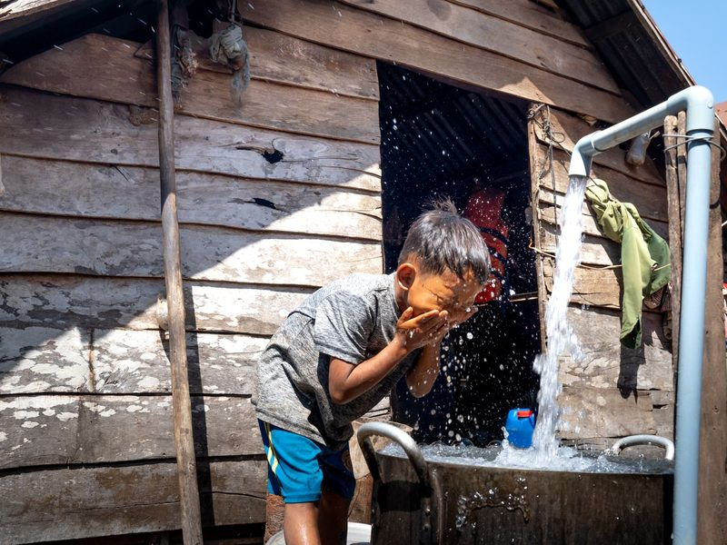
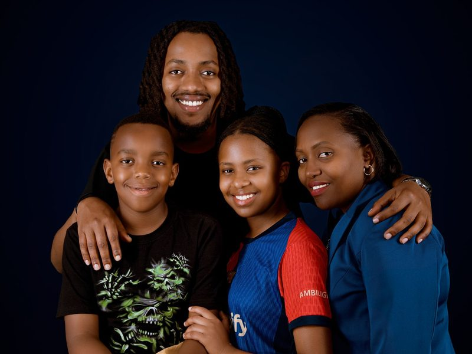
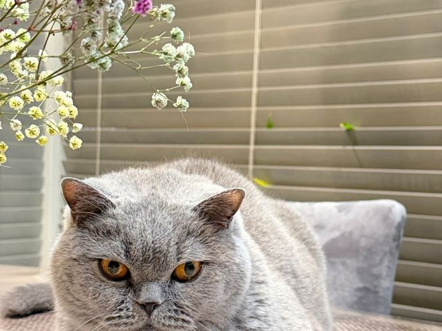

UNIT 18 · VOCABULARY
F 開頭（一）
F-I
39 個單字聽・唸・用
本單元單字一覽
WORD UP「F-I」的 39 個字（face 到 fight）。紅色＝要複習，藍色標籤＝WORD UP 標熟記、還要在這裡考對。
facefactfactoryfailfailurefairfallfalsefamilyfamousfanfancyfantasticfarfarmfarmerfashionablefastfatfatherfaucetfaultfavorfavoritefearFebruaryfeefeedfeelfellowfemalefencefestivalfeverfewfieldfifteenfiftyfight
每個字都有 🔊，先聽發音、跟著唸，再看例句。
單字 1–4

face
臉；面對n./v.
Wash your face before bed.
睡前洗臉。
睡前洗臉。
📌
fact
事實n.
In fact, I don't like coffee.
事實上，我不喜歡咖啡。
事實上，我不喜歡咖啡。

factory
工廠n.
My uncle works in a car factory.
我叔叔在汽車工廠工作。
我叔叔在汽車工廠工作。
📉
fail
失敗；不及格v.
Don't give up if you fail.
失敗了也不要放棄。
失敗了也不要放棄。
單字 5–8
💔
failure
失敗n.
Failure is the mother of success.
失敗為成功之母。
失敗為成功之母。

fair
公平的；博覽會adj./n.
It's not fair!
這不公平！
這不公平！

fall
落下；跌倒；秋天v./n.
Leaves fall in autumn.
秋天葉子會掉落。
秋天葉子會掉落。
❎
false
錯的；假的adj.
Is this sentence true or false?
這個句子是對還是錯？
這個句子是對還是錯？
單字 9–12

family
家庭；家人n.
There are four people in my family.
我家有四個人。
我家有四個人。

famous
有名的adj.
Tainan is famous for its food.
台南以美食聞名。
台南以美食聞名。
fan
電扇；粉絲n.
I'm a big fan of this singer.
我超迷這個歌手。
我超迷這個歌手。

fancy
花俏的；高級的adj.
We had dinner at a fancy restaurant.
我們在一家高級餐廳吃晚餐。
我們在一家高級餐廳吃晚餐。
單字 13–16
🤩
fantastic
極好的adj.
The show was fantastic!
那場表演太棒了！
那場表演太棒了！

far
遠的；遠地adj./adv.
My school is not far from my home.
我學校離家不遠。
我學校離家不遠。

farm
農場n.
My grandparents live on a farm.
我爺爺奶奶住在農場。
我爺爺奶奶住在農場。

farmer
農夫n.
The farmer grows rice and vegetables.
那位農夫種稻米和蔬菜。
那位農夫種稻米和蔬菜。
單字 17–20
👠
fashionable
時髦的adj.
She always wears fashionable clothes.
她總是穿時髦的衣服。
她總是穿時髦的衣服。

fast
快的；快地adj./adv.
He runs very fast.
他跑得很快。
他跑得很快。

fat
胖的；肥的adj.
My cat is getting fat.
我的貓越來越胖了。
我的貓越來越胖了。

father
父親n.
My father is a police officer.
我爸爸是警察。
我爸爸是警察。
單字 21–24

faucet
水龍頭n.
Turn off the faucet when you brush your teeth.
刷牙時要關水龍頭。
刷牙時要關水龍頭。
🙇
fault
過錯；責任n.
It's not your fault.
這不是你的錯。
這不是你的錯。
🤝
favor
幫忙；恩惠n.
Can you do me a favor?
你可以幫我一個忙嗎？
你可以幫我一個忙嗎？
❤️
favorite
最喜歡的adj./n.
Pizza is my favorite food.
披薩是我最喜歡的食物。
披薩是我最喜歡的食物。
單字 25–28

fear
害怕；恐懼n./v.
She has a fear of dogs.
她怕狗。
她怕狗。

February
二月n.
Valentine's Day is in February.
情人節在二月。
情人節在二月。
fee
費用n.
The entrance fee is 50 dollars.
入場費是 50 元。
入場費是 50 元。

feed
餵v.
Don't forget to feed the fish.
別忘了餵魚。
別忘了餵魚。
單字 29–32
🤒
feel
感覺v.
I feel tired today.
我今天覺得很累。
我今天覺得很累。
🧑
fellow
傢伙；同伴的n./adj.
He is a nice fellow.
他是個好人。
他是個好人。
♀️
female
女性的；雌性adj./n.
The female lion is hunting.
母獅子正在狩獵。
母獅子正在狩獵。

fence
籬笆；圍牆n.
The dog jumped over the fence.
狗跳過了籬笆。
狗跳過了籬笆。
單字 33–36

festival
節日；慶典n.
The Moon Festival is my favorite festival.
中秋節是我最喜歡的節日。
中秋節是我最喜歡的節日。

fever
發燒n.
I have a fever and a headache.
我發燒又頭痛。
我發燒又頭痛。
🤏
few
很少的；一些adj./pron.
I have a few friends in Japan.
我在日本有幾個朋友。
我在日本有幾個朋友。
field
田野；運動場；領域n.
The cows are eating grass in the field.
牛在田野吃草。
牛在田野吃草。
單字 37–39
1️⃣
fifteen
十五n.
I am fifteen years old.
我十五歲。
我十五歲。
5️⃣
fifty
五十n.
There are fifty students in the hall.
禮堂裡有五十個學生。
禮堂裡有五十個學生。

fight
打架；戰鬥v./n.
The two boys had a fight.
那兩個男孩打了一架。
那兩個男孩打了一架。
容易搞混的字
| 字 | 用法 | 例子 |
|---|---|---|
| fail / failure | 失敗（動詞）／ 失敗（名詞） | fail the exam ／ a big failure |
| few / a few | 很少（幾乎沒有）／ 一些 | Few people came. ／ A few people came. |
| fair / fare | 公平的、博覽會 ／ 車資 | a fair game ／ the bus fare |
| fee / fare | 費用（學費、入場費）／ 車資 | school fees ／ taxi fare |
| female / male | 女性的 ／ 男性的 | a female doctor ／ a male nurse |
| feel / fall | 感覺（felt）／ 落下（fell） | I felt sick. ／ I fell down. |
few 接可數名詞；little 接不可數名詞：a few books ／ a little water。
常考片語
| 說法 | 中文 | 例子 |
|---|---|---|
| in fact | 事實上 | In fact, he is right. |
| be famous for | 以…聞名 | famous for its night markets |
| do + 人 + a favor | 幫某人一個忙 | Could you do me a favor? |
| far from | 離…很遠 | far from the city |
| have a fever | 發燒 | She has a high fever. |
| feel + 形容詞 | 覺得… | feel happy ／ feel sick |
快問快答：中文 → 英文
1臉；面對face
2工廠factory
3失敗failure
4落下；跌倒；秋天fall
5家庭；家人family
6電扇；粉絲fan
7極好的fantastic
8農場farm
快問快答：英文 → 中文
1fashionable時髦的
2fat胖的；肥的
3faucet水龍頭
4favor幫忙；恩惠
5fear害怕；恐懼
6fee費用
7feel感覺
8female女性的；雌性
學完了！接下來
複習方法
review
- 回到「📗 單字卡」，按「遮中文」自己考自己
- 再按「遮英文」，看中文說出英文
- 每個例句跟著 🔊 唸一次
準備好了
- 按右上角「📝 前往測驗」
- 測驗錯的題目要訂正到全對
- 訂正完成補送 1 點